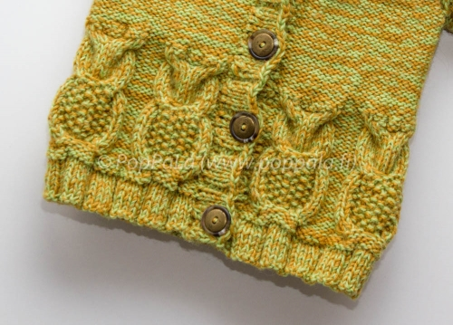

Paula Salonen
Taustani
Olen 31-vuotias biologi Jyväskylästä ja tällä hetkellä vanhempainvapaalla maisemanhoidon
suunnittelijan työstäni.
Olen koulutukseltani ekologi (FM) ja
sivuaineina olen opiskellut ympäristötieteitä ja yhteiskuntatieteitä.
Olen työskennellyt viimevuodet pääasiassa maiseman hoitoon liittyvissä EU-hankkeissa ja tehnyt maaseudun
ympäristösopimuksiin liittyvää neuvontaa maatiloilla. Pidän suunnittelutyöstä ja työssäni
yksi mielekkäimmistä osista on karttatyöt.
Harrastukset
Harrastan erilaisia käsitöitä ja olen kirjoittanut niistä blogia. Tavoitteenani on saada kaatunut blogini auki uudelleen kevään aikana. Tykkään liikkua luonnossa ja tunnistaa mm. kasveja ja lintuja.
